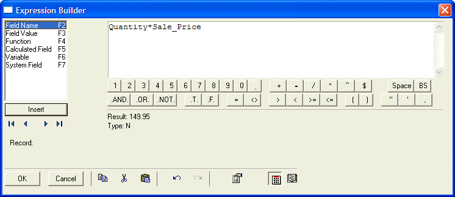
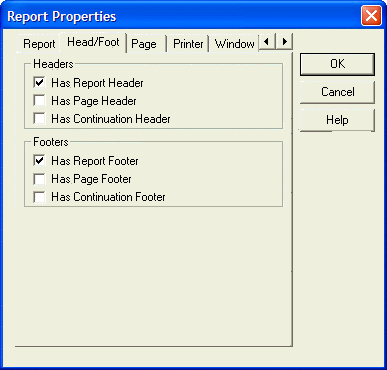

Using the Report Editor
Reports, Letters, and Labels are Alpha Five layouts for data output. In this lesson, you learn how to create reports. You learn about Letters and Labels in the following lesson.
Reports are a versatile type of layout for printing data. In reports, you can group related records together, perform calculations, order and select the records that appear, divide pages into columns, and design reports with page headers and footers, graphics, and more. Alpha Five presents a quick and easy way to get started with creating reports.
Understanding Report Structure
Alpha Five divides Reports into the following three Section Types: Report, Detail, and Group.
|
Section Type |
Description |
|
Report |
Prints at the beginning and end of the Report. The Report section is a wrapper for the rest of the Report. |
|
Detail |
Prints individual records, and repeats until all the records have been printed. |
|
Groups |
Groups are records that have the same key. Group sections repeat at the beginning and end of each group of records. If you do not specify a Group, the Detail section prints as one continuous section. |
Within each of these Section Types, you can have multiple layout regions. A layout region is where you place fields and text, and other objects.
Report sections and layout regions print at different times. For example, the Report Header layout region prints once at the beginning of the Report and the Report Footer layout region prints once at the end of the Report. Group sections print once at the beginning of each group and once at the end of each group. For example, you might group movie titles by category (Horror, Drama, and so on). The Group Header prints at the beginning of the category group and the Group Footer prints at the end of the category group. Each record (movie title) in the group, prints in the Detail layout region, located between the Group Header and Group Footer. Each group, with its associated Detail region, prints repeatedly until all the groups of records are printed. as such, you would have a complete listing of Horror film titles, Drama film titles, and so on.
The Report Editor creates a blank report that appears with some of the following report sections.
The Report Editor shows the division between sections and layout regions with section title bars. On each title bar there is a Show/Hide button which lets you toggle the appearance of the section.
The Show/Hide buttons only control the Report display in the Report Editor ; they do not effect the Report appearance when you print or preview it. You can also show and hide Report components by selecting Sections, Titles, or Regions from the View menu.
The following table describes some Report layout regions. A spillover page occurs when the detail section of a group begins on one page and ends on another.
|
Section |
Description |
|
Report Header |
All objects placed in this section appear once at the beginning of the Report. Typically, you place the Report title, corporate logo, and background information here. |
|
Page Header |
All objects placed in this section appear once at the top of every page of the Report. |
|
Group Header |
All objects placed in this section appear once at the beginning of each data group of the Report but not at the top of the spillover pages. When you group in a Report, you can place the field on which the Report is grouped in this section. |
|
Detail Header |
All objects placed in this section appear once at the beginning of the detail region. Field column headings are commonly placed in this section. |
|
Detail |
All objects placed in this section appear once for each record in the Report. |
|
Detail Footer |
All objects placed in this section appear once at the bottom of the Detail region. |
|
Group Footer |
All objects placed in this section appear once at the end of data group of the Report but not at the bottom of the spillover pages. When you group in a Report, you can place summary calculations that are performed for each group in this section. |
|
Page Footer |
All objects placed in this section appear once at the bottom of every page of the Report. |
|
Report Footer |
All objects placed in this section appear once at the end of the Report. Grand total information for all records is commonly placed in this section. |
Other layout regions include Continuation Headers and Footers, Repeating Group Headers and Footers, and Special Page Headers and Footers.
On the Report Editor toolbar, click the Print Preview button to preview your Report. You can navigate in the Preview window, using the Print Preview toolbar.

Select File > Print, or click the Print button on the toolbar to display the Print dialog box.

Use the Print dialog box to specify a printer, range of pages, and number of copies to print.
 Note : If printing
or previewing takes longer than you expected, check to see if you have
pre calculate record counts in View > Settings > Preferences >
Reports set to "Yes".
Note : If printing
or previewing takes longer than you expected, check to see if you have
pre calculate record counts in View > Settings > Preferences >
Reports set to "Yes".
You can convert your report to an Adobe Acrobat Portable Document Format (PDF) file to distribute to others. Anyone who has the Acrobat Reader, which is free and widely distributed, can read the PDF file.
To print a report to a PDF file:
With the Customer List report in the Report Editor, click the Print Preview button. The report appears in the Print Preview window.
Click the Save in Acrobat PDF Format button on the toolbar. Alpha Five converts the report to PDF format, and displays the report in the Adobe Acrobat Reader.

Alpha Five assigns the new PDF file the same name as the Report, with a PDF extension.
Click the Email Report as a Acrobat PDF Attachment button on the toolbar. Alpha Five opens your email program, and attaches the report PDF file to a new email message.
Click Exit Preview. The Customer List Report appears in the Control Panel.
In the next section, you create a new report starting with a blank report.
In the following procedures, you create an Invoice Items report, starting with a blank report. To create a report starting with a blank report:
In the AlphaMovies Control Panel, click the Reports tab, and click New. The New Object Genie appears.
Select the "Items" table as the data source, and click Next.
Select Start from a blank Report, and click Finish. A new, blank report appears in the Report Editor with three empty report sections.

You use the <span class=Screen>Drag-and-Drop List</span> to insert field objects in the report layout areas.
Click the Drag-and-Drop List button on the toolbar.
When you select a field to insert in the report and drag it to the report section, an object frame appears as you drag the field onto the Report.
In addition, when you release the mouse button, the Summary Field Genie appears.
The Drag-and-Drop List window contains a Genie button that is on by default. When the Genie button is on, a Summary Field Genie appears that lets you perform a summary calculation for a single field which you are adding to the layout. If you do not want the Summary Field Genie to appear, click the Genie button in the Drag-and-Drop List window, to turn it off.
When adding multiple fields, the Summary Genie does not appear. Also, when adding multiple fields, you can specify their alignment as vertical or horizontal by clicking the appropriate layout button in the Drag-and-Drop List window. After you have placed fields on the Report, you can change the style, appearance, and other attributes of the fields.
Click the Horizontal alignment button in the Drag-and-Drop List window
 .
.Hold the Shift key, select the following Items fields: "Tape_ID", "Quantity", and "Sale_Price", and drag them into the Detail layout area of the Report. The fields appear in the Report.

You can resize Report sections, by placing your cursor over a horizontal layout boundary. When the cursor becomes a two-headed arrow, click and drag to adjust the section height.
In the next step, you add a calculated field for the product of the quantity times the sales price.
In the Drag-and-Drop List, under Calculated Fields, select "New Calc/Summary Field", and drag it into the Report, next to the Sale_Price field. The New Calculated Field dialog box appears.

Enter the Name, Extension, and click the Expression Builder button. The Expression Builder dialog box appears.
Create the following expression: Quantity*Sale_Price, and click OK.

Alpha Five displays the expression in the New Calculated Field dialog box.

-
Click OK. Alpha Five adds the Extension field to the Report, next to the Sale_Price field.
You can align selected objects in one layout region by using the Arrange menu and toolbar, like you did when working with Forms. In addition, you can use the horizontal and vertical rulers, to move and align selected objects across several layout regions.
For small movements of selected objects, you can use the Shift+Arrow keys, and for slightly larger movements, use the Arrow keys.
Click the Save button on the toolbar, and save the Report as "Invoice Items".
 Note : Report names
are limited to a maximum of 24 characters.
Note : Report names
are limited to a maximum of 24 characters.
In the next section, you insert additional sections in the report, and add objects.
In the next procedure, you add sections to the Invoice Items Report.
To add a Report section:
With the Invoice Items Report in the Report Editor, right-click on the Report section band and select Properties, or select Report > Properties > Report Properties from the menu bar. The Report Properties dialog box appears.
Click the Head/Foot tab.

Select Has Page Header, Has Page Footer, and click OK. The new sections appear in the report. You might have to enlarge the Report Editor window to see them.
Alpha Five provides predefined system fields that you can add to your report. These system fields can display information such as Page numbers, current date, and sort order.
The following table describes Alpha Five system fields.
|
Field |
Description |
|
Date |
Prints the computer's system date on the report. This predefined calculated field uses the DATE() function as its expression. |
|
PageNumber |
Prints the current page number of the report. This predefined calculated field uses the PAGENO() function as its expression. |
|
PageXofY |
Prints the page number and the total number of pages in the Report. For example, a field value of Page 1 of 8 indicates the first page in a eight page report. |
|
Current_Order |
Prints the sort order expression for the report. |
|
Current_Filter |
Prints the Report record selection expression on the report. |
You use the <span class=Screen>Drag-and-Drop List</span> to insert system fields in a report.
To insert a system field in the Report:
With the Invoice Items Report in the Report Editor, from the Drag-and-Drop List, select "Date" under System fields, and drag it in the Report, in the Page Header section.
From the Drag-and-Drop List, select "PageXofY" under System fields, and drag it in the Report, in the Page Footer section. The system fields appear in the Report.

The current system date, and the current page and total number of pages, appear when you preview or print the Report.
Click the Save button on the toolbar to save the layout, and click the Print Preview button to view the Report.
Click Exit Preview to return to the Report Editor. Next you add text objects and format some field objects.
Adding and Formatting Report Objects
In the following procedures, you create a title heading for your report, some column headings, and you format some fields. You have many options for adding objects and enhancing the Report appearance. In the next sections, you add and format some objects.
To add objects to the Report:
With the Invoice Items report in the Report Editor, click the Toolbox button in the toolbar. The Toolbox appears.
From the Toolbox, select the Text tool, and create a rectangle on the Report, in the Page Header for Report section.
Enter the text "Invoice Items Report".
Right-click in the text field, and select Properties. The Text Properties dialog box appears.
 Note : You can access
object properties by selecting the object, and pressing the F12
key.
Note : You can access
object properties by selecting the object, and pressing the F12
key.
Click the Alignment tab, and under Horizontal Alignment, click Center.
Click the Font tab, and select Arial, 14, and Bold.
Click OK. The report appears with the title text you specified.

Click Save and preview the report.
Click Exit Preview to return to the Report Editor. In the next section, you group your Report into sections according to Invoice Number.
You can divide data into subsets by creating a group. The formation of groups is based on a group break expression. A group break expression can consist of a single field, or a calculated expression composed of a combination of fields, functions, and operators.
You use the New Group Properties dialog box to specify the grouping for a Report.
To create a group for the Report:
With the Invoice Items Report in the Report Editor, select Report > Insert Group Break. The New Group Properties dialog box appears.
Click the Group tab, select "Invoice_Number" in the Break on change in: drop-down list box, and enter "Invoice Number" in the Label text box.

Click the Region tab.
Select Keep Group Together on Page, and click OK. Alpha Five adds Group Header and Group Footers to the report.
Select "Invoice_Number" in the Drag-and-Drop List, and place it in the Group Invoice Number Header of the report.
Using the Properties dialog box, format the field as Arial, 12, Bold, and Italic.
Using the Toolbox, place a Text object next to the Invoice Number field object.
Enter the text "Invoice Number", and apply the format Arial, 12, Bold, and Italic, with Center Horizontal Alignment.

-
Enlarge the Group Invoice Number Header.
In the next steps, you use the Text tool to create a text object in the Group Invoice Number Header for each field object in the Detail section.
Using the Text tool, create the following text objects and place them in the Group Invoice Number Header, aligned above the corresponding field object: Tape ID#, Quantity, Cost, Extension.
In the Properties dialog box for each text object, specify Center Horizontal Alignment, and the font, Arial, 10, and Bold.

Right-click on the Sale_Price field object and select Properties. The Field Properties dialog box appears.
Click the Format tab, and select the "$123,456.78" Format Style, and click OK.

Repeat steps 12, and 13 for the Extension field object.
Click Save and preview the Report. The Invoice Items Report appears grouped by invoice number.

Click Exit Preview to return to the Report Editor.
You can use several groupings, but you must take into consideration the nesting order. For example, you might group invoice line items by media type (tape, DVD) and invoice number. If you grouped by invoice number first and then by media type, you would get a list of DVD's for each invoice number and a separate list of tapes for each invoice number. If you grouped by media type first, you would get the line items grouped for the DVD's rented, and then a list of tapes rented for each invoice number.
Suppressing Blank Space in a Report
Alpha Five lets you suppress blank space at the end of each report section, within report sections, and within objects.
To suppress blank space:
Right-click in the white space in a layout region, such as in the Detail section, and select Properties from the right-click menu. The Region Properties dialog box appears.
On the Region tab, select Shrink contents of band, and click OK.

To have Alpha Five suppress blank space within a report band, you must also select the Allow Shrink property for the objects in the Report section.
Right-click on the Sale_Price field, and select Properties.
On the Setup tab in the Field Properties dialog box, select Allow Shrinking.

Alpha Five can also suppress blank space at the end of individual objects you place on a report. For a multi-line memo field object on a report, you would make the object size big enough to print the maximum memo size. However, for records that contain less text, you might like to shrink the size of the object. To shrink the size of the object, right-click on the object, select the Setup tab, and select Allow Shrinking.
Placing Memo Fields on Reports
When you draw a memo object on a report, you should make it only one line high. It will expand if it needs to, since the "allow growth when printing" property defaults to true.
Creating a Summary Calculation
You can provide summary information for your report by creating a calculated field that summarizes groups.
In the following procedure, you create summary fields for the total number of tapes and total sales amount for each invoice.
To create a summary field:
With the Invoice Items report in the Report Editor, click the Drag-and-Drop List button. The Drag-and-Drop List window appears, with the Genie button on (depressed).
From the <span class=Screen>Drag-and-Drop List</span> , select the "Quantity" field, and drag in into the Group Invoice Number Footer. When you release the mouse button, the Summary Field Genie appears.

The Summary Field Genie lets you specify whether you want to print the value of the field itself, or some calculated value, such as the total, or count of that field.
Select Total of the Field, and click the Advanced button. The Summarization Advanced Settings dialog box appears.

You can determine the records to include in the summary operation by setting the Group and Subgroup parameters. Optionally, you can modify the calculated field name and display characteristics that Alpha Five assigns.
Keep the Group and Subgroup default settings.
Change the Calculated Field Name to "total_no_tapes", and click OK.
In the Summary Field Genie, click Finish. The total_no_tapes field appears in the Group Invoice Number Footer of the report.
From the Drag-and-Drop List, select the "Extension" field, and drag in into the Group Invoice Number Footer. The Summary Field Genie appears.
Select Total of the Field, and click Finish. The total calculated field appears in Group Invoice Number Footer.
With the Total Extension field selected, press the F12 key to display the Field Properties dialog box.
Click the Format tab, select the Format Style, $123,456.78, and click OK.
Create two text labels: "Total Number of Tapes" and "Total Invoice Sales", and place them next to the corresponding field objects.

Using the Properties dialog box, format the text fields as Arial, 10, and Bold.
Click Save and Print Preview. The report appears displaying the total number of tapes and total sales for each Invoice.

Importing a Layout as a Starting Point for a New Report
If you have already created a form or browse, you can use it to create a report. The following example creates a report from the CustomerBrowse browse in the AlphaSports sample database.
Display the Reports tab of the Control Panel.
Click New to display the New Report dialog.
Select the "customer" table in the Data Source list.
Select the Start from a Blank Report radio button and click OK.
Select Report > Import > Browse to display the Import Browse dialog.
Click No when the dialog asks if you want to save changes to the current report.
Select "CustomerBrowse" and click OK.
The Report Editor should look like the following. Note that the report only contains a detail section. You will want to add a report header and footer before the report is completed.
After clicking
 (preview), the report should look like this:
(preview), the report should look like this:

See Also